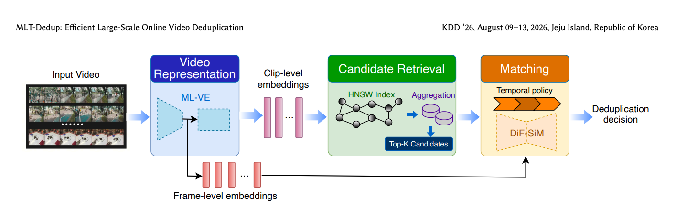

MLT-Dedup: Efficient Large-Scale Online Video Deduplication via Multi-Level Representations and Spatial-Temporal Matching
KDD 2026 · ADS · arXiv:2606.12215 · Preprint first submitted 2026/06/10
Abstract
The explosive growth of user-generated video content on online platforms is accompanied by the emergence of numerous near-duplicate videos--videos that are identical or highly similar but differ by partial edits. These duplicates degrade user experience and increase storage and bandwidth costs, making large-scale video deduplication a critical task. Existing video deduplication frameworks face a fundamental challenge in retrieving sufficient high-quality candidates under a limited index budget, as well as trade-offs between efficiency and precision. To address these issues, we propose MLT-Dedup, an efficient large-scale online video deduplication framework with Multi-Level representations and spatial-Temporal matching. Our approach employs a Multi-Level Video Encoder (ML-VE) to extract both fine-grained frame-level and sparse clip-level embeddings: sparse embeddings support efficient candidate retrieval, while fine-grained embeddings are loaded for precise pairwise matching. During matching, we introduce DiF-SiM, a Differential Feature-enhanced Similarity Module capable of locating duplicated temporal segments and providing reliable similarity evidence to support policy-driven deduplication decisions. Extensive experiments on a real-world large-scale platform demonstrate that MLT-Dedup reduces online repetition rates by 91% at 90% precision. Furthermore, our sparse retrieval design achieves a 5x increase in indexing capacity, enabling broader candidate coverage in real-world deployment.
Overview
Multi-level representations and spatial-temporal matching for scalable near-duplicate video retrieval and precise segment localization.

91% reduction in online repetition @ 90% precision · 5× indexing capacity
Citation
David Yuchen Wang; Haoying Li; Hailun Xu; Wei Chee Yew; Zirui Zhu; Sanjay Saha; Hao Hei; Kanchan Sarkar; Kun Xu. (2026). MLT-Dedup: Efficient Large-Scale Online Video Deduplication via Multi-Level Representations and Spatial-Temporal Matching. arXiv preprint 2606.12215. https://arxiv.org/abs/2606.12215
BibTeX for the arXiv version:
@misc{mltdedup2026,
title = {MLT-Dedup: Efficient Large-Scale Online Video Deduplication via Multi-Level Representations and Spatial-Temporal Matching},
author = {Wang, David Yuchen and Li, Haoying and Xu, Hailun and Yew, Wei Chee and Zhu, Zirui and Saha, Sanjay and Hei, Hao and Sarkar, Kanchan and Xu, Kun},
year = {2026},
url = {https://arxiv.org/abs/2606.12215},
eprint = {2606.12215},
archivePrefix = {arXiv}
}